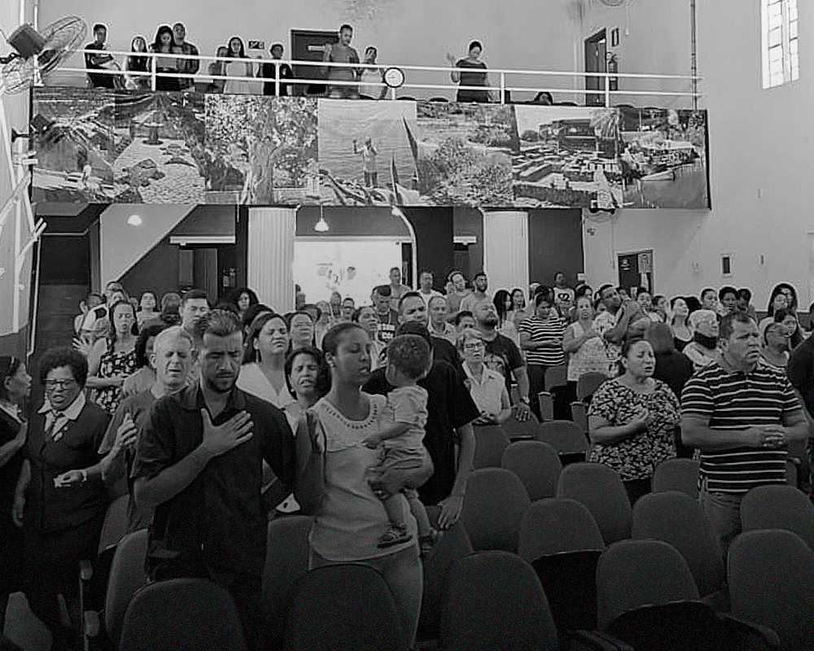

<ion-content [fullscreen]="true">
  
  <ion-item lines="none" style="--background: transparent;">
    <ion-label>
      Últimas Pregações
    </ion-label>
  </ion-item>
  <ion-row style="margin: 5px 0 0 10px">
    <swiper-container slides-per-view="2.5" [spaceBetween]="10" #swiperContainer>
      <swiper-slide *ngFor="let latestUpdate of latestUpdates">
        
          <ion-card-title>Uma vida de oração</ion-card-title>
          <ion-card-subtitle>Pr. Dalcir Prado</ion-card-subtitle>
      </swiper-slide>
    </swiper-container>
  </ion-row>
  <ion-item lines="none" style="--background: transparent;">
    <ion-label>
      Próximos eventos
    </ion-label>
  </ion-item>
  <ion-row style="margin: 10px 0 0 10px;">
    <swiper-container style="height: 40%" slides-per-view="1.1" autoplay="true" [spaceBetween]="10" #swiperContainer>
      <swiper-slide style="height: 100%;" *ngFor="let banner of banners">
        
          <!-- <ion-card-title>Uma vida de oração</ion-card-title>
          <ion-card-subtitle>Pr. Dalcir Prado</ion-card-subtitle> -->
      </swiper-slide>
    </swiper-container>
  </ion-row>
</ion-content>
